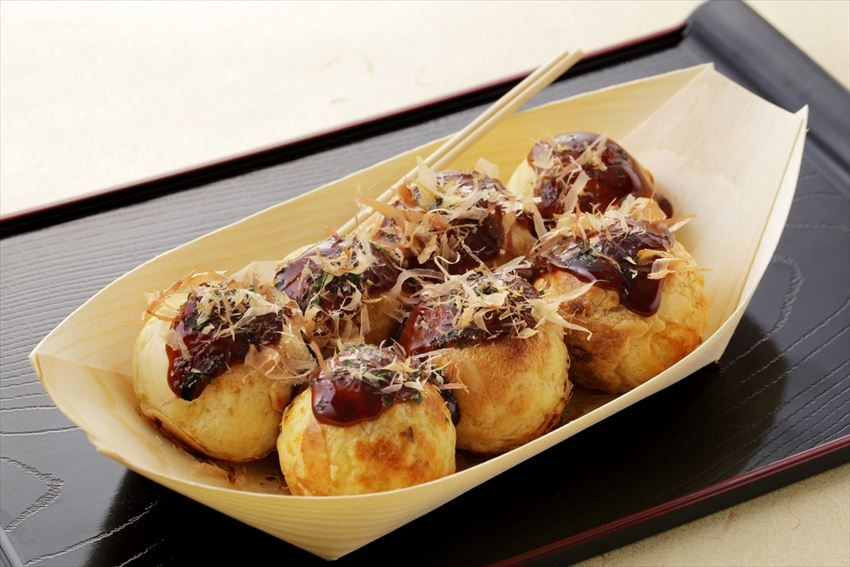

(◠﹏◠✿) 𝓒𝓪𝓵𝓪𝓽𝓸𝓻 𝓲𝓷 𝓙𝓪𝓹𝓸𝓷𝓲𝓪
(◠ᴥ◠) Preparate japoneze
❀ Yakisoba
Yakisoba, cu înțelesul literal de "tăiței prăjiți", este o mâncare vândută adesea la festivaluri în Japonia, dar care își are originile în China. Mâncarea a fost derivată din tradiționalul chinezesc chow mein, dar a fost integrată mai tare în bucătaria japoneză, precum s-a întâmplat și cu ramen.
❀ Ramen
Ramen este o mâncare tradițională japoneză. Este o supă de carne sau de pește ce conține tăiței, și poate fi aromată cu sos de soia și miso. Depinzând de tip, poate conține și alte ingrediente, precum carne de porc, alge, bambus, ceapă verde, ou fiert sau ciuperci.
❀ Takoyaki
Takoyaki este o gustare japoneză de formă sferică făcută dintr-un aluat pe bază de făină de grâu și coaptă într-o tavă cu forme speciale. Aceste bile sunt de obicei umplute cu carne de caracatiță tocată sau tăiată cubulețe, resturi de aluat tempura, ghimbir murat și ceapă.
